Meterkast, batterij & noodstroom · Nederhorst den Berg · vroege zomer 2026
Wat begon als een omvormer vervangen bij 48 bestaande zonnepanelen, groeide toen de meterkast openging uit tot een compleet nieuwe technische ruimte: een gloednieuwe ABB-meterkast, een zelf ontworpen bypass-kast en 50 kWh Pylontech-batterijopslag met noodstroom, aangestuurd door Jullix EMS. Vijf dagen werk van het team van JTS Installatietechniek, in de kelder van de woning.
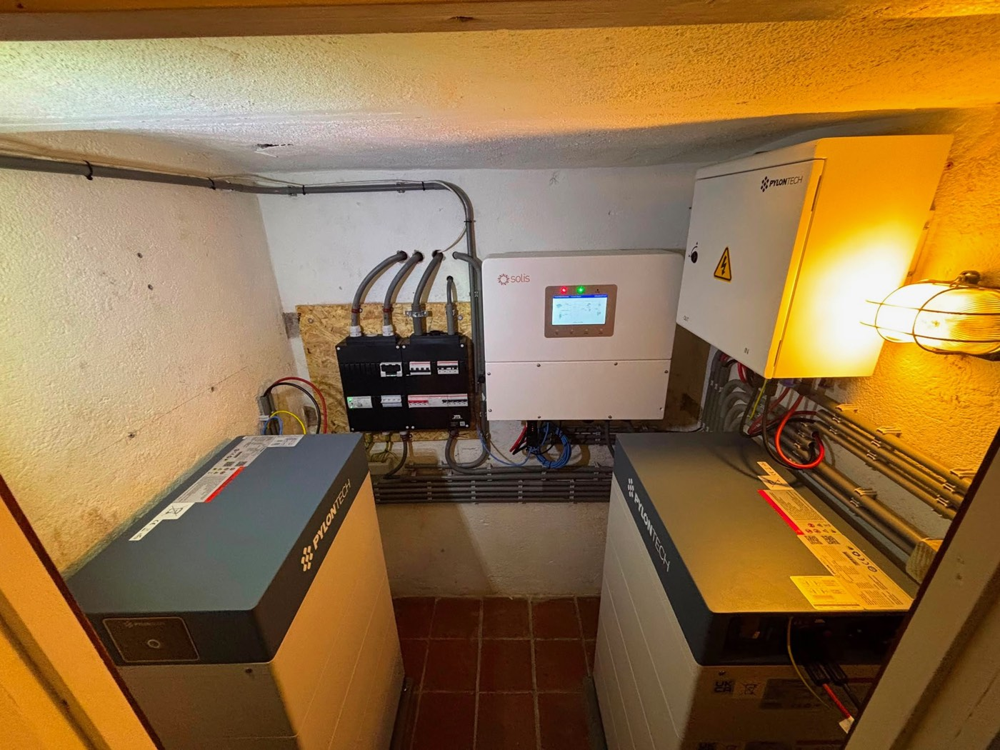
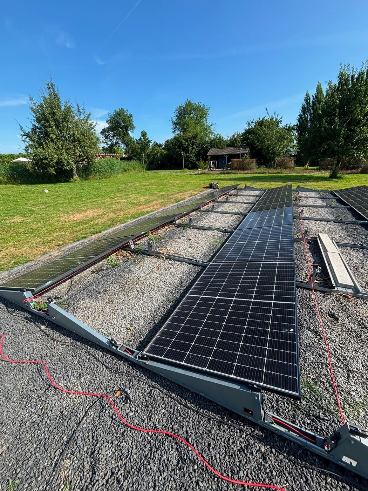
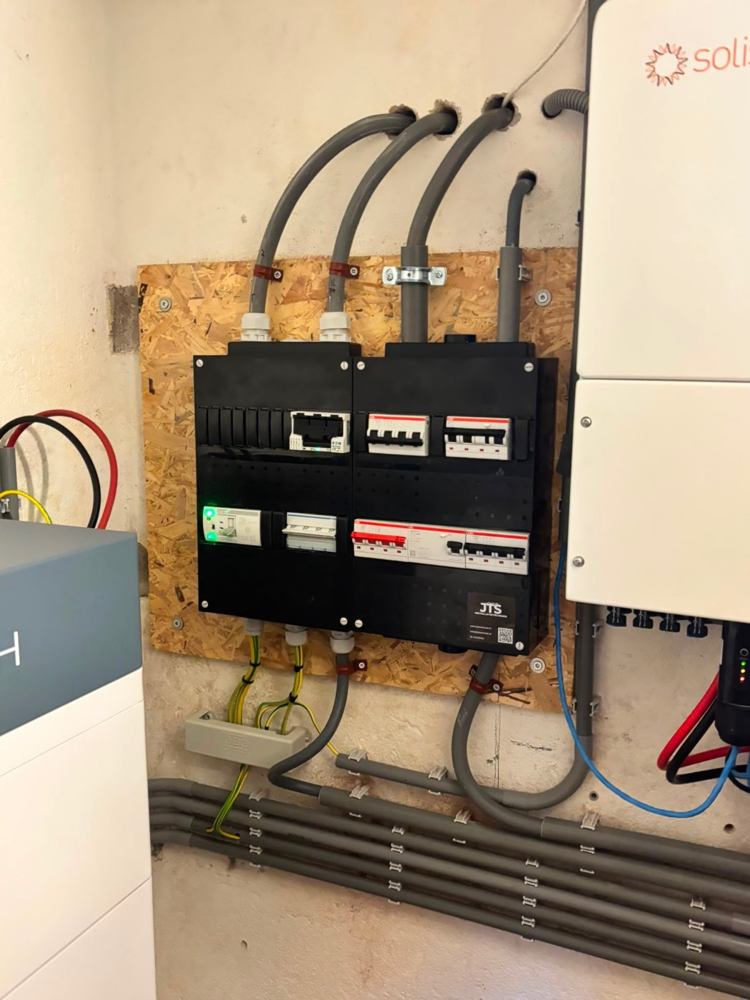
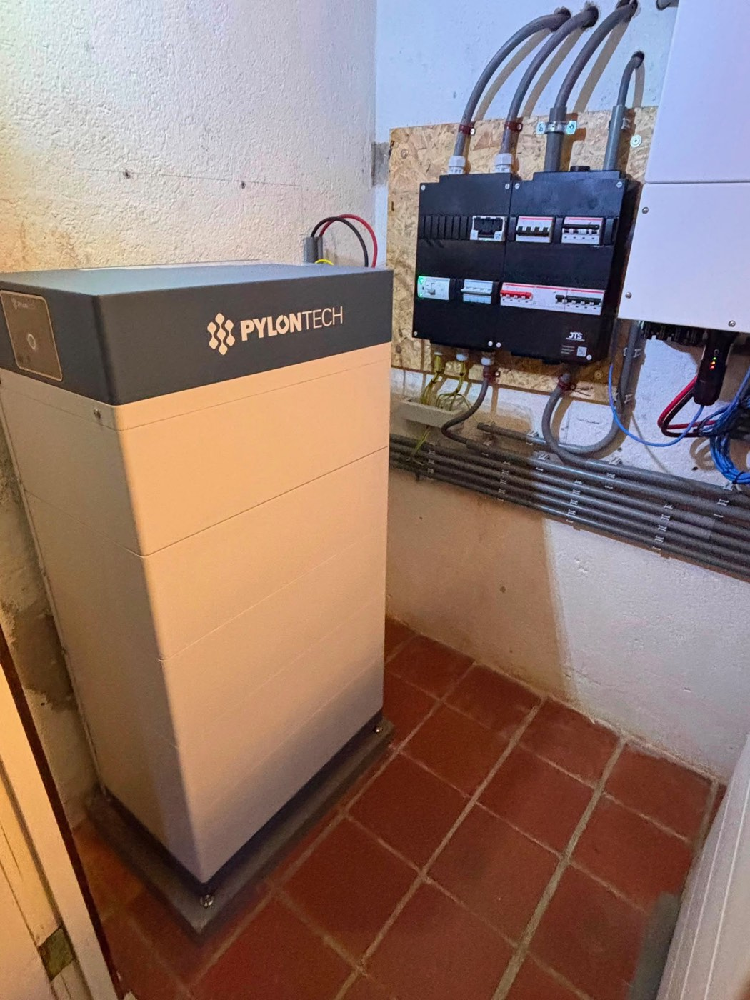
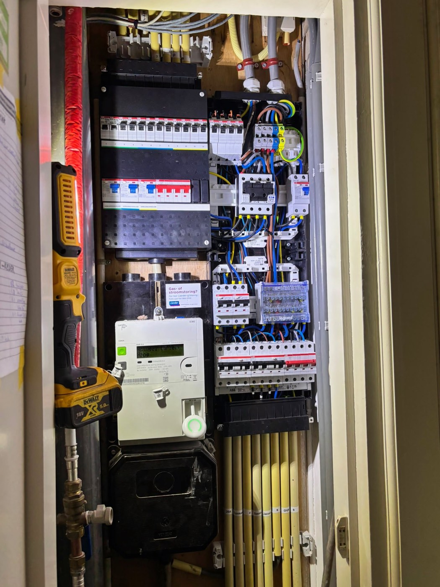
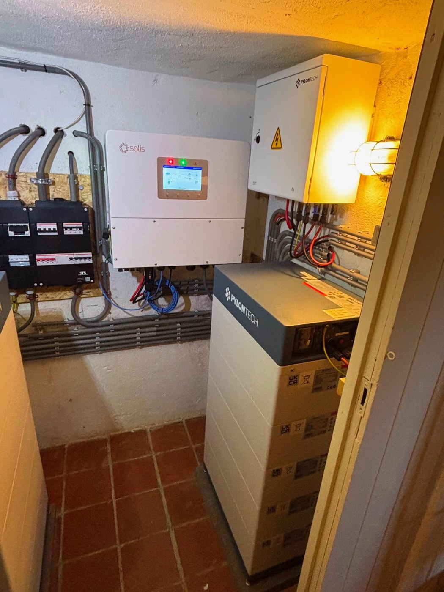
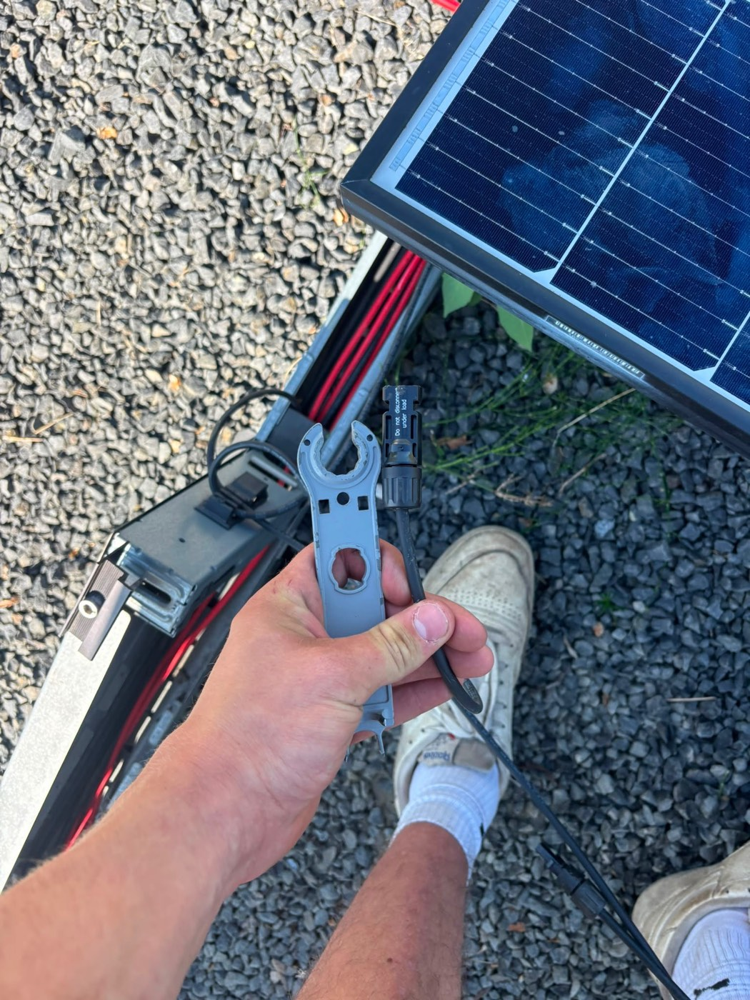
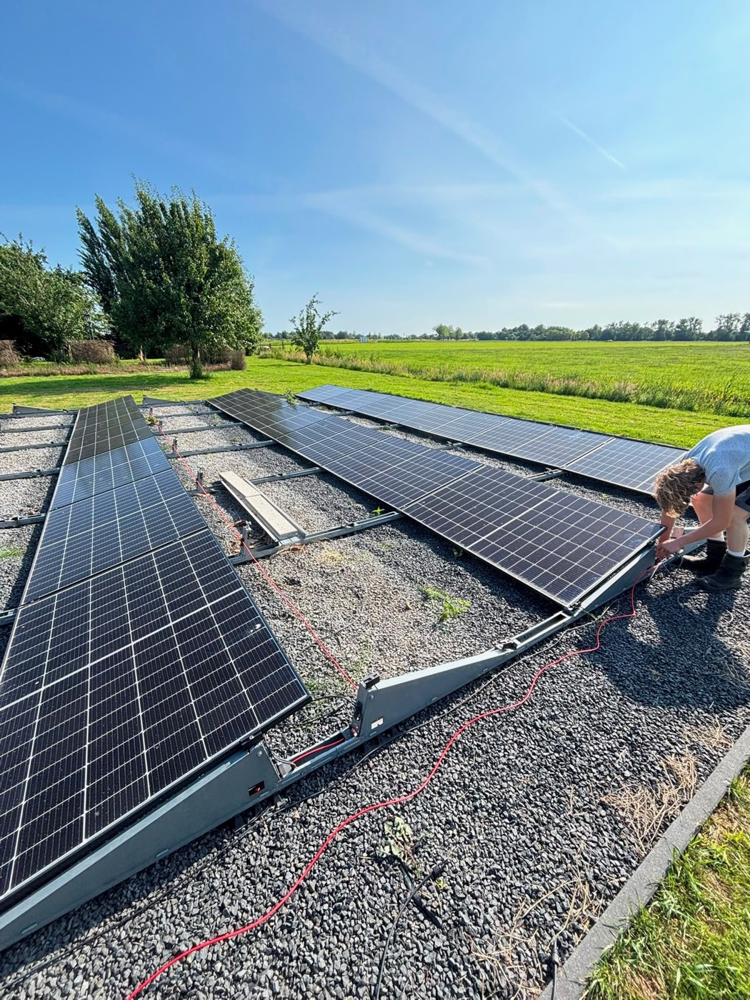
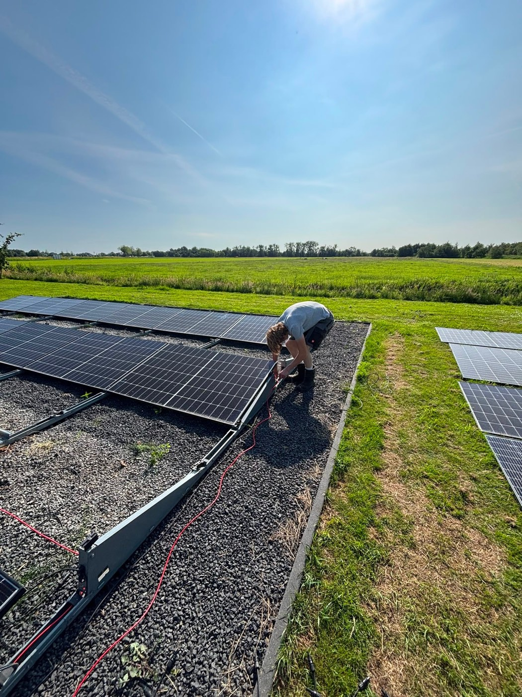
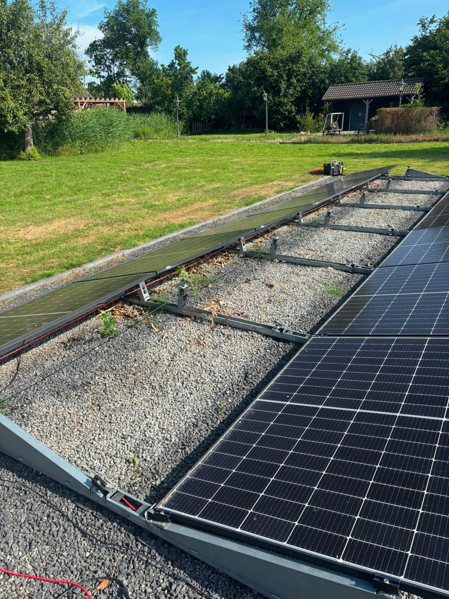
In Nederhorst den Berg hingen bij Cobus al 48 zonnepanelen van 420 Wp, goed voor ruim 20 kWp aan opwekvermogen. De panelen zelf deden het prima, maar de omvormer — een oudere Growatt — was aan vervanging toe, en de optimizers die er destijds bij waren geplaatst hadden nooit nut gehad: in een veldopstelling zonder schaduw op de panelen doen die weinig meer dan extra kosten en extra faalpunten toevoegen.
Toen we voor de omvormer de meterkast opendeden, bleek er meer aan de hand. De bedrading zat volgepropt en gedeeltelijk los — een situatie die niet meer voldeed en gewoon gevaarlijk was. Wat begon als een omvormerklus, werd zo het startpunt van een veel groter verhaal: een compleet nieuwe technische ruimte, met een batterijsysteem en noodstroom erbij.
Bij de panelen in het veld, ver van de woning, is de oude Growatt-omvormer vervangen door een Huawei-omvormer; de overbodige optimizers zijn eraf gehaald. Binnen is de hele meterkast vervangen door een nieuwe uitvoering met A-merk componenten van ABB — bij Nuzon installeren we altijd de beste kwaliteit, ook als dat wat meer kost dan het alternatief.
Omdat er ook een noodstroomvoorziening bij moest, hebben we een bypass-kast geëngineerd en geplaatst: die zet de hoofdaansluiting direct door naar een andere ruimte, waar de nieuwe hoofdkast de stroom weer verder verdeelt. Vanaf de bypass-kast is nieuwe bedrading aangelegd, heen en weer naar de oude locatie waar de nieuwe meterkast kwam te staan — met flink meer ruimte en de nodige aanpassingen. Het geheel is ondergebracht in de kelder, die nu functioneert als een echte technische ruimte.
Voor de opslag is gekozen voor 50 kWh aan Pylontech H3-batterijen, verdeeld over twee stapels die via een combinerbox samenkomen op een Solis 15kTL hybride omvormer. Zo'n 30 tot 40% van die capaciteit is gereserveerd voor noodstroom, de rest voor dagelijks gebruik. Jullix EMS stuurt het geheel aan: het praat zowel met de Huawei-omvormer in het veld als met het batterijsysteem in de kelder, en houdt zo alles op elkaar afgestemd. Dat gebeurt met een planning per kwartier die elk uur wordt herberekend — zo schakelt de batterij vanzelf tussen balanceren en opladen op de goedkope uren, terwijl het gereserveerde deel voor noodstroom buiten die planning blijft.
Vijf dagen werk van het team van JTS Installatietechniek leverden een installatie op die nu uitstekend draait: een nieuwe, veilige meterkast, een batterijsysteem dat het huis bij een storing zelfstandig van stroom voorziet, en een technische ruimte die klaar is voor de toekomst. Het is precies het soort project dat niet iedereen aankan — een uitdaging die alleen mogelijk is met de juiste kennis en kunde, en die het team met veel plezier heeft opgepakt.
In de Jullix-app is precies te zien wat dat oplevert: sinds de oplevering is er al €1.224,70 bespaard, met €592 in juli en €518 in augustus alleen al. Op een gemiddelde dag haalt het huishouden 96% zelfverbruik — het overgrote deel van de 4,62 kW die de panelen opwekken gaat rechtstreeks naar het huis of de batterij, en er wordt nauwelijks nog stroom van het net afgenomen. In de vermogensgrafiek is goed te zien hoe de batterij midden op de dag, als de panelen pieken tot boven de 15 kW, in een paar uur volledig oplaadt — en die energie ’s avonds weer teruggeeft aan het huis. Jullix houdt daarbij ook de actuele stroomprijs in de gaten, die per uur verschilt tussen afname en injectie.
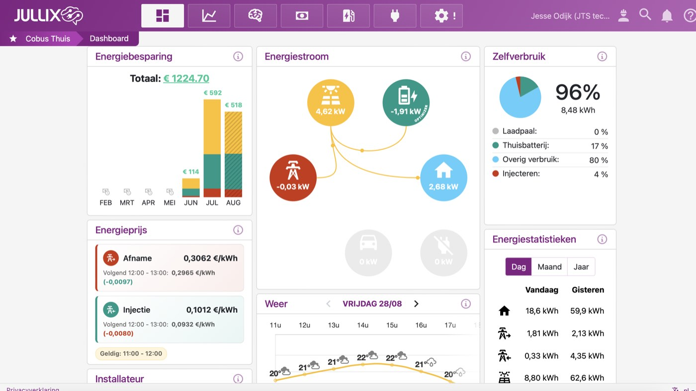
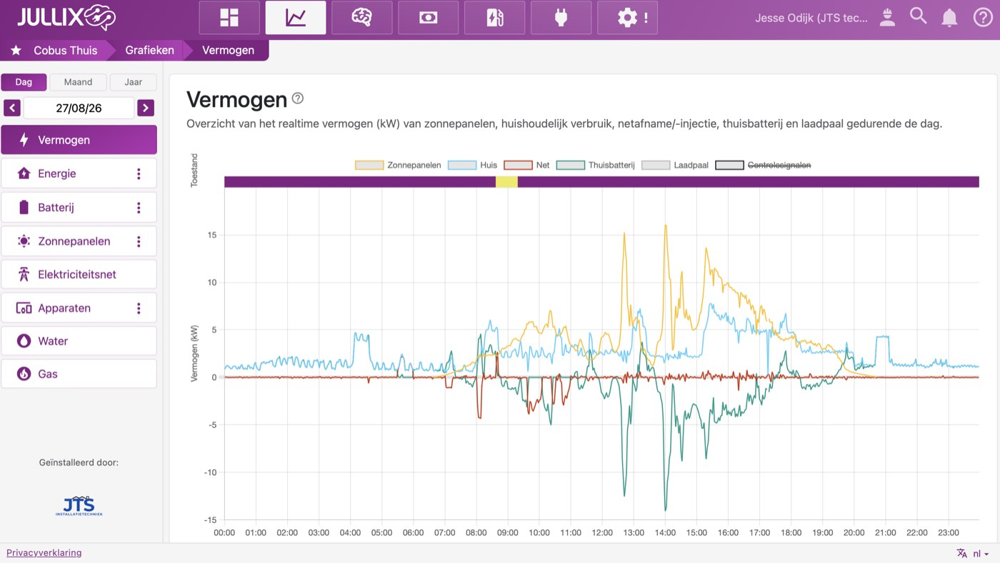
Van een omvormer die aan vervanging toe was tot een complete technische ruimte met eigen noodstroom — een knap staaltje denkwerk, en precies het soort klus waar JTS Installatietechniek voor gebeld wordt in Nederhorst den Berg en de regio Utrecht.
Een bypass-kast maakt het mogelijk om de hoofdaansluiting direct door te zetten naar een andere ruimte, zonder de bestaande meterkast daarvoor om te bouwen. Bij dit project in Nederhorst den Berg loopt de stroom vanaf de hoofdaansluiting eerst naar de bypass-kast en vandaar met nieuwe bedrading naar de nieuwe hoofdkast, die de stroom weer verder verdeelt. Zo kan de noodstroomvoorziening precies aansluiten op de plek waar de nieuwe, grotere technische ruimte kwam, zonder dat de oorspronkelijke huisaansluiting ergens in de weg zit.
Een combinerbox bundelt de gelijkstroom van meerdere accustapels tot één aansluiting op de omvormer, zodat beide stapels als één geheel werken in plaats van als twee losse systemen. In Nederhorst den Berg staan twee stapels Pylontech H3-batterijen samen goed voor 50 kWh; de combinerbox zorgt dat de Solis-hybride omvormer die 50 kWh als één capaciteit ziet en aanstuurt.
Voor de meeste noodstroomvoorzieningen is een reserve van 20 tot 40% van de batterijcapaciteit gebruikelijk, afhankelijk van hoe lang een storing moet worden overbrugd en hoeveel verbruik er tijdens noodstroom door moet blijven draaien. Bij dit project in Nederhorst den Berg is 30 tot 40% van de 50 kWh gereserveerd voor noodstroom; de rest blijft beschikbaar voor dagelijks gebruik en aansturing door Jullix EMS.
Een meterkast wordt een gevaarlijke situatie zodra bedrading los hangt, de kast overvol raakt met aanpassingen die niet bij het oorspronkelijke ontwerp horen, of onderdelen niet meer aan de huidige norm voldoen. Bij dit project in Nederhorst den Berg bleek dat pas zichtbaar toen de kast openging: volgepropte, los hangende bedrading die geen deel meer was van een overzichtelijk geheel. Daarom is de hele meterkast vervangen door een nieuwe uitvoering met A-merk componenten van ABB.
Een string-omvormer zet alleen de gelijkstroom van zonnepanelen om naar wisselstroom, terwijl een hybride omvormer ook rechtstreeks een batterij aanstuurt en de gelijkstroom van panelen en accu's op één plek samenbrengt. Bij dit project in Nederhorst den Berg staat er daarom een Huawei-omvormer bij de bestaande panelen in het veld, en apart daarvan een Solis 15kTL hybride omvormer die het Pylontech-batterijsysteem aanstuurt en met Jullix EMS praat.
Zoiets in gedachten voor uw eigen situatie in Nederhorst den Berg of de regio Utrecht? Vraag gratis advies aan — we kijken vrijblijvend mee.